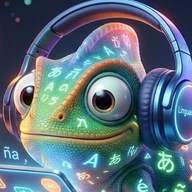
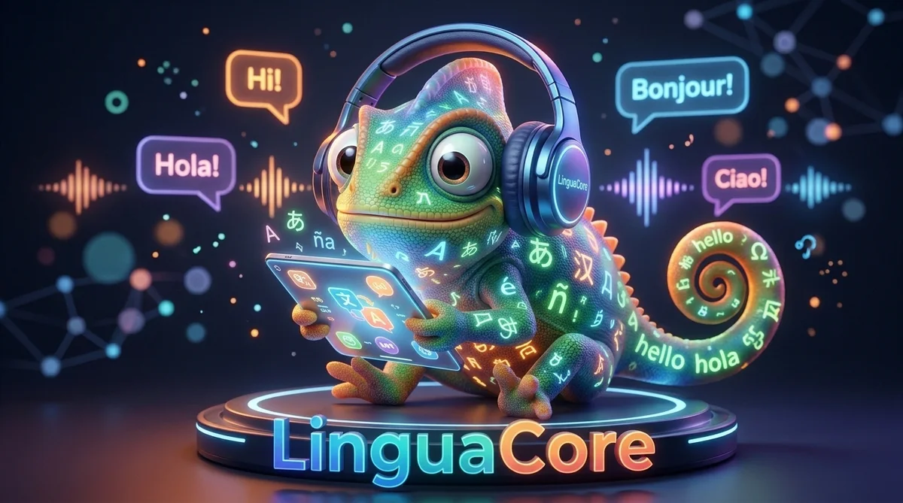

<!doctype html>
<html lang="es"><head><meta charset="utf-8">
<meta name="viewport" content="width=device-width,initial-scale=1,viewport-fit=cover">
<title>LinguaCore</title>
<meta name="description" content="Aprende inglés, japonés, chino, italiano, alemán y griego con repaso espaciado.">
<meta name="theme-color" content="#070C18">
<link rel="manifest" href="manifest.webmanifest">
<link rel="icon" type="image/png" href="icons/icon-192.png">
<link rel="apple-touch-icon" href="icons/apple-touch-icon.png">
<meta name="mobile-web-app-capable" content="yes">
<meta name="apple-mobile-web-app-capable" content="yes">
<meta name="apple-mobile-web-app-title" content="LinguaCore">
<link rel="stylesheet" href="fonts/fonts.css">
<style>html{padding-top:env(safe-area-inset-top,0px);padding-bottom:env(safe-area-inset-bottom,0px)}body{margin:0}img{max-width:100%}[hidden]{display:none!important}</style>
<style>
/* Layout: navegación inferior en móvil y lateral en escritorio; una columna de contenido de 640px.
   Estilo: oscuro por defecto con los colores de la mascota (azul, turquesa, naranja); la mascota es lo único ilustrado. */
:root{--bg:#070C18;--surf:#0F1830;--surf2:#162240;--line:rgba(150,180,235,.16);--ink:#EAF0FB;--mut:#9AABC7;--accA:#6C97FF;--accB:#35D6C2;--accC:#FF9B62;--priA:#6C97FF;--priB:#35D6C2;--pri-fg:#06101F;--priglow:rgba(53,214,194,.22);--ok:#4ADE9A;--bad:#FF8279;--okbg:rgba(74,222,154,.10);--badbg:rgba(255,130,121,.10);--en:#6C97FF;--en2:#4A6FE0;--ja:#FF8A67;--ja2:#E8553A;--el:#35D6C2;--el2:#1BA899;--zh:#F5B84A;--zh2:#E08A1E;--it:#5BD68A;--it2:#2FAE63;--de:#A98BFF;--de2:#7B5CE6;--on:#06101F;--glow1:rgba(108,151,255,.18);--glow2:rgba(53,214,194,.10);--navbg:rgba(7,12,24,.82);--shadow:0 10px 30px rgba(0,0,0,.28);--tileglow:rgba(0,0,0,.35);color-scheme:dark}
@media (prefers-color-scheme:light){:root:not([data-theme="dark"]){--bg:#F3F6FB;--surf:#FFFFFF;--surf2:#EEF2F9;--line:rgba(15,27,51,.12);--ink:#0F1B33;--mut:#53668A;--accA:#2F5FD0;--accB:#0B857B;--accC:#D9602A;--priA:#2A55C4;--priB:#0B7F76;--pri-fg:#FFFFFF;--priglow:rgba(42,85,196,.22);--ok:#1B7F57;--bad:#B3261E;--okbg:rgba(27,127,87,.08);--badbg:rgba(179,38,30,.07);--en:#2F5FD0;--en2:#1F46A8;--ja:#D9482B;--ja2:#B63220;--el:#0B857B;--el2:#096B63;--zh:#A8660A;--zh2:#7D4A05;--it:#1F8A4C;--it2:#146C3A;--de:#6A4CD6;--de2:#4F37B0;--on:#FFFFFF;--glow1:rgba(47,95,208,.10);--glow2:rgba(11,133,123,.07);--navbg:rgba(255,255,255,.86);--shadow:0 8px 24px rgba(15,27,51,.08);--tileglow:rgba(15,27,51,.22);color-scheme:light}}
:root[data-theme="light"]{--bg:#F3F6FB;--surf:#FFFFFF;--surf2:#EEF2F9;--line:rgba(15,27,51,.12);--ink:#0F1B33;--mut:#53668A;--accA:#2F5FD0;--accB:#0B857B;--accC:#D9602A;--priA:#2A55C4;--priB:#0B7F76;--pri-fg:#FFFFFF;--priglow:rgba(42,85,196,.22);--ok:#1B7F57;--bad:#B3261E;--okbg:rgba(27,127,87,.08);--badbg:rgba(179,38,30,.07);--en:#2F5FD0;--en2:#1F46A8;--ja:#D9482B;--ja2:#B63220;--el:#0B857B;--el2:#096B63;--zh:#A8660A;--zh2:#7D4A05;--it:#1F8A4C;--it2:#146C3A;--de:#6A4CD6;--de2:#4F37B0;--on:#FFFFFF;--glow1:rgba(47,95,208,.10);--glow2:rgba(11,133,123,.07);--navbg:rgba(255,255,255,.86);--shadow:0 8px 24px rgba(15,27,51,.08);--tileglow:rgba(15,27,51,.22);color-scheme:light}
*{box-sizing:border-box}
body{background-color:var(--bg);background-image:radial-gradient(780px 420px at 85% -8%,var(--glow1),transparent 65%),radial-gradient(640px 380px at -5% 4%,var(--glow2),transparent 62%);background-repeat:no-repeat;color:var(--ink);font-family:'Hanken Grotesk',system-ui,'Hiragino Sans','Noto Sans JP',sans-serif;font-size:16px;line-height:1.5;padding-left:max(16px,env(safe-area-inset-left,0px));padding-right:max(16px,env(safe-area-inset-right,0px))}
h1,h2,h3,.wm,.big,.num,.tile .g,.stat3 b,.mode b,.lg{font-family:'Bricolage Grotesque','Hanken Grotesk',system-ui,'Hiragino Sans','Noto Sans JP',sans-serif}
h1{font-size:26px;font-weight:800;letter-spacing:-.02em;line-height:1.15;margin:0;text-wrap:balance}
h2{font-size:18px;font-weight:700;letter-spacing:-.01em;margin:26px 0 10px;text-wrap:balance}
h3{font-size:16px;font-weight:700;margin:0 0 4px}
p{margin:0}
.mut{color:var(--mut);font-size:14px}
.num{font-variant-numeric:tabular-nums}
.sr{position:absolute;width:1px;height:1px;overflow:hidden;clip:rect(0 0 0 0);white-space:nowrap}
.ic{flex:none}
.row{display:flex;gap:10px;align-items:center}.sp{justify-content:space-between}.wrap{flex-wrap:wrap}
.stack{display:grid;gap:10px}
/* shell */
.shell{max-width:1040px;margin:0 auto}
.main{max-width:640px;margin:0 auto;padding:14px 0 112px}
.sess{max-width:640px;margin:0 auto;padding:16px 0 40px}
.top{display:flex;align-items:center;justify-content:space-between;margin-bottom:14px}
.brand{display:flex;align-items:center;gap:10px}
.wm{font-weight:800;font-size:21px;letter-spacing:-.02em;background:linear-gradient(90deg,var(--accA),var(--accB) 55%,var(--accC));-webkit-background-clip:text;background-clip:text;color:transparent}
.brand-d{display:none}
.pill{display:inline-flex;align-items:center;gap:6px;background:var(--surf);border:1px solid var(--line);border-radius:99px;padding:5px 12px;font-size:14px;font-weight:600}
.pill svg{color:var(--accC)}
.nav{position:fixed;left:0;right:0;bottom:0;z-index:20;display:flex;gap:4px;padding:8px max(12px,env(safe-area-inset-right,0px)) calc(8px + env(safe-area-inset-bottom,0px)) max(12px,env(safe-area-inset-left,0px));background:var(--navbg);backdrop-filter:blur(16px);-webkit-backdrop-filter:blur(16px);border-top:1px solid var(--line)}
.ni{flex:1;display:flex;flex-direction:column;align-items:center;gap:3px;border:0;background:transparent;color:var(--mut);padding:8px 4px;border-radius:14px;font-size:12px;font-weight:600}
.ni[aria-selected="true"]{color:var(--ink);background:var(--surf2)}
.ni[aria-selected="true"] svg{color:var(--accB)}
@media (min-width:860px){
 .shell{display:grid;grid-template-columns:210px minmax(0,640px);gap:48px;justify-content:center;padding-top:32px}
 .nav{position:sticky;top:32px;bottom:auto;left:auto;right:auto;align-self:start;flex-direction:column;padding:0;background:transparent;border:0;backdrop-filter:none;-webkit-backdrop-filter:none;gap:6px}
 .brand-d{display:flex;margin-bottom:18px}.brand-m{display:none}
 .ni{flex-direction:row;justify-content:flex-start;gap:12px;font-size:15px;padding:11px 14px}
 .main{padding:0 0 48px;margin:0;max-width:none}
}
/* superficies */
.box{background:var(--surf);border:1px solid var(--line);border-radius:18px;padding:16px;min-width:0;box-shadow:var(--shadow)}
.hero{background:var(--surf);border:1px solid var(--line);border-radius:22px;overflow:hidden;box-shadow:var(--shadow)}
.himg{background:#0B1020;aspect-ratio:1376/768}
.himg img{display:block;width:100%;height:100%;object-fit:cover}
.hbody{display:flex;align-items:center;gap:14px;padding:16px 16px 4px}
.hbtns{display:grid;gap:10px;padding:12px 16px 16px}
.ring{flex:none}.ring .rt{fill:var(--ink);font:700 17px 'Bricolage Grotesque',system-ui,sans-serif}
.stats{display:grid;grid-template-columns:repeat(3,1fr);gap:10px;margin:14px 0}
.stat3{background:var(--surf);border:1px solid var(--line);border-radius:16px;padding:12px;display:flex;flex-direction:column;gap:2px;min-width:0}
.stat3 b{font-size:24px;font-weight:800;line-height:1.1;font-variant-numeric:tabular-nums}.stat3 span{color:var(--mut);font-size:13px}
.f1 svg{color:var(--accC)}.f2 svg{color:var(--accB)}.f3 svg{color:var(--accA)}
.en{--c1:var(--en);--c2:var(--en2)}.ja{--c1:var(--ja);--c2:var(--ja2)}.el{--c1:var(--el);--c2:var(--el2)}.zh{--c1:var(--zh);--c2:var(--zh2)}.it{--c1:var(--it);--c2:var(--it2)}.de{--c1:var(--de);--c2:var(--de2)}
.lc{display:flex;gap:14px;align-items:center;padding:14px;background:var(--surf);border:1px solid var(--line);border-radius:18px;margin-bottom:10px}
.lg{width:48px;height:48px;border-radius:15px;display:grid;place-items:center;font-size:21px;font-weight:700;color:var(--on);background:linear-gradient(145deg,var(--c1),var(--c2));flex:none}
.lb{flex:1;min-width:0}.lb .bar{margin:8px 0 6px}
.bar{height:6px;background:var(--line);border-radius:9px;overflow:hidden;margin:12px 0 18px}
.bar i{display:block;height:100%;background:linear-gradient(90deg,var(--c1,var(--accA)),var(--c2,var(--accB)));border-radius:9px;transition:width .35s ease}
.empty{text-align:center;padding:28px 8px;display:grid;justify-items:center;gap:10px}.empty p{max-width:34ch}.empty .pri{max-width:320px}
.done{text-align:center;padding:20px 0 8px;display:grid;justify-items:center;gap:8px}
.greet{display:flex;gap:12px;align-items:center}
.bubble{background:var(--surf);border:1px solid var(--line);border-radius:18px;border-bottom-left-radius:6px;padding:12px 16px;font-weight:600;font-size:17px}
.av{border-radius:50%;object-fit:cover;background:var(--surf2);border:1px solid var(--line);flex:none;display:block}
/* controles */
button{font:inherit;cursor:pointer;border-radius:14px;border:1px solid var(--line);background:var(--surf2);color:var(--ink);padding:11px 14px;font-weight:600;transition:transform .12s ease,border-color .15s}
button:active:not(:disabled){transform:scale(.98)}
button:disabled{opacity:.5;cursor:default}
@media (hover:hover){button:hover:not(:disabled){border-color:var(--accB)}}
button:focus-visible,input:focus-visible,textarea:focus-visible,summary:focus-visible{outline:3px solid var(--accB);outline-offset:2px}
.pri{background:linear-gradient(135deg,var(--priA),var(--priB));color:var(--pri-fg);border:0;width:100%;padding:15px;font-size:17px;font-weight:700;box-shadow:0 8px 22px var(--priglow)}
.ghost{background:transparent}
.mini{padding:6px 11px;font-size:13px;border-radius:10px;display:inline-flex;align-items:center;gap:6px}
.icb{width:42px;height:42px;padding:0;display:inline-grid;place-items:center;border-radius:13px;flex:none}
.chips{display:flex;gap:6px;flex-wrap:wrap;margin:8px 0 12px}
.chip{padding:8px 14px;border-radius:99px;font-size:14px;background:var(--surf)}
.chip.on{background:linear-gradient(135deg,var(--priA),var(--priB));color:var(--pri-fg);border-color:transparent}
.lab{display:block;font-size:14px;font-weight:600;margin:12px 0 6px;color:var(--mut)}
input[type=text],textarea{width:100%;font:inherit;font-size:17px;padding:13px 14px;border-radius:14px;border:1.5px solid var(--line);background:var(--surf2);color:var(--ink)}
input::placeholder,textarea::placeholder{color:var(--mut)}
textarea{min-height:110px;resize:vertical}
.tools{display:flex;gap:8px;margin-top:10px}.tools button{flex:1}
.opts{display:grid;gap:8px}.opts button{text-align:left;font-size:17px;padding:14px 16px;background:var(--surf)}
/* sesión de repaso */
.tile{position:relative;border-radius:24px;padding:42px 18px 30px;text-align:center;color:var(--on);margin-bottom:16px;background:linear-gradient(150deg,var(--c1),var(--c2));box-shadow:0 14px 36px var(--tileglow);overflow:hidden}
.tile::after{content:"";position:absolute;inset:0;background:radial-gradient(260px 160px at 88% 0%,rgba(255,255,255,.22),transparent 70%);pointer-events:none}
.tile .tl{position:absolute;top:14px;left:16px;font-size:12px;font-weight:700;background:rgba(0,0,0,.16);border-radius:99px;padding:3px 11px}
.tile .g{font-size:56px;font-weight:800;line-height:1.1;overflow-wrap:anywhere}.tile .g.s{font-size:28px}
.tile .q{font-size:17px;margin-top:10px;position:relative}
.fb{margin-top:14px;padding:14px;border-radius:16px;background:var(--okbg);border:1px solid var(--ok);display:flex;gap:12px;align-items:flex-start}
.fb.x{background:var(--badbg);border-color:var(--bad)}
.fb svg{color:var(--ok)}.fb.x svg{color:var(--bad)}
.fb b{display:block;margin-bottom:2px}
/* tutor */
.modes{display:grid;grid-template-columns:repeat(2,minmax(0,1fr));gap:10px;margin-top:14px}
.mode{display:flex;flex-direction:column;align-items:flex-start;gap:8px;text-align:left;padding:14px;border-radius:18px;background:var(--surf);height:100%}
.mi{width:38px;height:38px;border-radius:12px;display:grid;place-items:center;background:var(--surf2);color:var(--accB);flex:none}
.mode b{font-size:16px;line-height:1.2;font-weight:700}.mode small{color:var(--mut);font-weight:400;font-size:13px;line-height:1.35}
.mh{display:flex;align-items:center;gap:10px;margin-bottom:4px}.mh h2{margin:0}
.msg{display:flex;gap:8px;align-items:flex-end;margin:10px 0}.msg.me{justify-content:flex-end}
.b{padding:10px 14px;border-radius:18px;max-width:86%;overflow-wrap:anywhere;white-space:pre-wrap}
.b.me{background:linear-gradient(135deg,var(--priA),var(--priB));color:var(--pri-fg);border-bottom-right-radius:6px}
.b.bot{background:var(--surf2);border:1px solid var(--line);border-bottom-left-radius:6px}
.bt{margin-top:6px}
.rd{color:var(--mut);font-size:14px;margin-top:2px}
.comp{display:flex;gap:8px;align-items:flex-end;margin-top:12px}.comp textarea{min-height:52px;max-height:160px;flex:1}
.send{width:52px;height:52px;padding:0;display:grid;place-items:center;border-radius:16px;background:linear-gradient(135deg,var(--priA),var(--priB));color:var(--pri-fg);border:0;flex:none}
.note{font-size:14px;margin:4px 0 10px 40px;border-left:3px solid var(--line);padding:2px 0 2px 10px;color:var(--mut)}
details.note summary{cursor:pointer;font-weight:600;color:var(--ink)}
details.note div{margin-top:6px}
.hint{background:var(--surf2);border-radius:14px;padding:10px 12px;font-size:15px;margin:6px 0 6px 40px}
.err{border:1.5px solid var(--bad);background:var(--badbg);border-radius:14px;padding:10px 12px;margin:10px 0;font-size:15px}
.ok{color:var(--ok);font-weight:600}.bad{color:var(--bad);font-weight:600}
.cardi{border-top:1px solid var(--line);padding:12px 0}.cardi:first-child{border:0;padding-top:0}
.big{font-size:20px;font-weight:700;overflow-wrap:anywhere}
.tag{display:inline-block;background:var(--surf2);border-radius:8px;padding:2px 8px;font-size:13px;margin:2px 4px 2px 0}
.cols{display:flex;gap:6px;align-items:flex-end;height:80px;margin-top:8px}
.col{flex:1;display:flex;flex-direction:column;justify-content:flex-end;align-items:center;gap:4px;font-size:11px;color:var(--mut);min-width:0}.col i{display:block;width:100%;background:linear-gradient(180deg,var(--accB),var(--accA));border-radius:4px 4px 0 0;min-height:2px}
a{color:var(--accB)}
a.pri{display:block;text-align:center;text-decoration:none;border-radius:14px}
.badge{font-style:normal;font-family:'Hanken Grotesk',system-ui,sans-serif;font-size:10px;font-weight:800;letter-spacing:.04em;padding:2px 7px;border-radius:99px;background:linear-gradient(135deg,var(--priA),var(--priB));color:var(--pri-fg);vertical-align:middle}
.foot{margin-top:36px;padding-top:20px;border-top:1px solid var(--line);display:grid;justify-items:center;gap:12px;text-align:center}
.kofi{display:inline-flex;align-items:center;gap:8px;padding:10px 16px;border:1px solid var(--line);border-radius:14px;background:var(--surf2);color:var(--ink);font-weight:600;text-decoration:none}
.kofi svg{color:var(--accC)}
@media (hover:hover){.kofi:hover{border-color:var(--accC)}}
.foot .mut a{color:inherit}
</style>
</head><body>
<div id="app"></div>
<script src="config.js"></script>
<script>
// ================= Versión web: configuración y métricas =================
// En claude.ai (artefacto) la IA funciona con tu cuenta. Fuera de Claude (web instalable) el Tutor IA es PRO y aún no está disponible.
const CFG=window.LC_CONFIG||{};            // lo define config.js en la versión web
const STANDALONE=!(window.claude&&window.claude.use);
function track(name,data){try{if(window.umami&&window.umami.track){data?window.umami.track(name,data):window.umami.track(name)}}catch(e){}}
(function(){if(!STANDALONE||!CFG.umamiId)return;const s=document.createElement('script');s.defer=true;s.src=CFG.umamiSrc||'https://cloud.umami.is/script.js';s.setAttribute('data-website-id',CFG.umamiId);s.setAttribute('data-do-not-track','true');document.head.appendChild(s)})();
let DEFERRED=null;
if(STANDALONE){
  window.addEventListener('beforeinstallprompt',e=>{e.preventDefault();DEFERRED=e;if(typeof S!=='undefined'&&S&&S.tab==='rev'&&!SES)render()});
  window.addEventListener('appinstalled',()=>track('pwa_installed'));
  if('serviceWorker' in navigator&&/^https?:$/.test(location.protocol))window.addEventListener('load',()=>{navigator.serviceWorker.register('sw.js').catch(()=>{})});
}

// ================= FSRS-4.5 (pesos por defecto) =================
const W=[0.4872,1.4003,3.7145,13.109,5.1618,1.2298,0.8975,0.031,1.6474,0.1367,1.0461,2.1072,0.0793,0.3246,1.587,0.2272,2.8755];
const DEC=-0.5,FAC=19/81,RET=0.9,DAY=864e5;
const clamp=(x,a,b)=>Math.min(b,Math.max(a,x));
const Rt=(t,s)=>Math.pow(1+FAC*t/s,DEC);
function schedule(m,g,now){
  if(!m){m={d:clamp(W[4]-W[5]*(g-3),1,10),s:W[g-1],n:0,l:0}}
  else{
    const r=Rt((now-m.last)/DAY,m.s);
    const d=clamp(W[7]*W[4]+(1-W[7])*(m.d-W[6]*(g-3)),1,10);
    let s;
    if(g===1){s=Math.min(m.s,W[11]*Math.pow(d,-W[12])*(Math.pow(m.s+1,W[13])-1)*Math.exp((1-r)*W[14]));m.l++}
    else s=m.s*(1+Math.exp(W[8])*(11-d)*Math.pow(m.s,-W[9])*(Math.exp((1-r)*W[10])-1)*(g===2?W[15]:1)*(g===4?W[16]:1));
    m.d=d;m.s=Math.max(0.1,s);
  }
  m.n++;m.last=now;
  let iv=m.s/FAC*(Math.pow(RET,1/DEC)-1);
  if(m.n>19)iv*=1.15;
  m.due=g===1?now+10*60*1e3:now+Math.max(1,Math.round(iv*(0.95+Math.random()*0.1)))*DAY;
  return m;
}
const phase=n=>n<10?'ACQ':n<=19?'CONS':'MAINT';
const PW={ACQ:1,CONS:1.3,MAINT:0.6};

// ================= Contenido base =================
const I=(id,l,t,m,q,a,c,note,pre=[])=>({id,l,t,m,q,a,c,note,pre});
const ITEMS=[
I('e1','en','always','siempre','Escríbelo en inglés: «siempre»',['always'],['I ___ drink coffee in the morning.',['always']],'Adverbio de frecuencia: va antes del verbo principal.'),
I('e2','en','because','porque','Escríbelo en inglés: «porque»',['because'],['I stayed home ___ it was raining.',['because']],'Responde a «why?».'),
I('e3','en','need','necesitar','Escríbelo en inglés: «necesitar» (I ___)',['need','to need'],['I ___ more time to finish this.',['need']],'Verbo de alta frecuencia; «need to + verbo» expresa obligación.'),
I('e4','en','between','entre','Escríbelo en inglés: «entre» (dos cosas)',['between'],['The café is ___ the bank and the station.',['between']],'Entre dos elementos; «among» para más de dos.',['e1']),
I('e5','en','although','aunque','Escríbelo en inglés: «aunque»',['although'],['___ it was late, we kept talking.',['although']],'Más formal que «but»; no se combina con «but» en la misma frase.',['e2']),
I('j1','ja','人','persona','Kanji 人: ¿qué significa?',['persona','gente','hombre'],['あの＿は先生です。 Lectura de 人 (hiragana o romaji)',['ひと','hito']],'Radical: una figura que camina. On: ジン/ニン; Kun: ひと.'),
I('j2','ja','木','árbol','Kanji 木: ¿qué significa?',['árbol','arbol','madera'],['大きな＿があります。 Lectura de 木',['き','ki']],'Radical: tronco, ramas y raíces. Kun: き; On: モク.'),
I('j3','ja','休','descansar','Kanji 休: ¿qué significa?',['descansar','descanso'],['日曜日は＿みです。 Lectura de 休',['やす','yasu']],'人 junto a 木: una persona apoyada en un árbol, descansando. Kun: やす(む); On: キュウ.',['j1','j2']),
I('j4','ja','日','día, sol','Kanji 日: ¿qué significa?',['día','dia','sol'],['日曜日 → ＿ようび. Lectura On de 日',['にち','nichi']],'Un sol con un destello. Kun: ひ; On: ニチ.'),
I('j5','ja','水','agua','Kanji 水: ¿qué significa?',['agua'],['＿をください。 Lectura de 水',['みず','mizu']],'Una corriente con salpicaduras. Kun: みず; On: スイ.'),
I('g1','el','νερό','agua','Escríbelo en griego (o con letras latinas): «agua»',['νερό','nero'],['Θέλω ένα ποτήρι ___.',['νερό','nero']],'Otra raíz griega de «agua», ὕδωρ, vive en hidratar e hidráulico.'),
I('g2','el','μιλάω','hablar','Escríbelo en griego (o latino): «hablar»',['μιλάω','μιλώ','milao'],['Εγώ ___ ελληνικά.',['μιλάω','μιλώ','milao']],'Verbo en -άω: μιλάω, μιλάς, μιλάει.'),
I('g3','el','μένω','vivir, quedarse','Escríbelo en griego (o latino): «vivir, quedarse»',['μένω','meno'],['Εγώ ___ στην Αθήνα.',['μένω','meno']],'Emparentado con el latín manere: permanecer, mansión.'),
I('g4','el','οδηγώ','conducir','Escríbelo en griego (o latino): «conducir»',['οδηγώ','odigo'],['Εγώ ___ το αυτοκίνητο.',['οδηγώ','odigo']],'Raíz ὁδός «camino»: método, éxodo, período.'),
I('g5','el','γράφω','escribir','Escríbelo en griego (o latino): «escribir»',['γράφω','grafo'],['Εγώ ___ ένα γράμμα.',['γράφω','grafo']],'Helenismo directo: grafía, fotografía, geografía.'),
I('z1','zh','我','yo','Carácter 我: ¿qué significa?',['yo'],['＿是学生。 Pinyin de 我',['wo','我']],'Pronombre «yo». Pinyin wǒ (tono 3). Lo usarás en casi todas las frases.'),
I('z2','zh','好','bueno, bien','Carácter 好: ¿qué significa?',['bueno','bien'],['你＿！ Pinyin de 好',['hao','好']],'女 (mujer) junto a 子 (niño): lo bueno. Pinyin hǎo (tono 3).'),
I('z3','zh','水','agua','Carácter 水: ¿qué significa?',['agua'],['我想喝＿。 Pinyin de 水',['shui','水']],'Una corriente con salpicaduras. Pinyin shuǐ (tono 3).'),
I('z4','zh','学','estudiar, aprender','Carácter 学: ¿qué significa?',['estudiar','aprender'],['我在＿中文。 Pinyin de 学',['xue','学']],'Un niño bajo un techo, aprendiendo. Pinyin xué (tono 2).',['z2']),
I('z5','zh','谢谢','gracias','Palabra 谢谢: ¿qué significa?',['gracias'],['＿！ Pinyin de 谢谢',['xiexie','谢谢']],'Dos veces 谢 (agradecer). Pinyin xièxie; la segunda sílaba va en tono neutro.',['z1']),
I('i1','it','sempre','siempre','Escríbelo en italiano: «siempre»',['sempre'],['Bevo ___ il caffè al mattino.',['sempre']],'Adverbio de frecuencia: suele ir después del verbo conjugado.'),
I('i2','it','perché','porque, por qué','Escríbelo en italiano: «porque / por qué»',['perché','perche'],['Resto a casa ___ piove.',['perché','perche']],'Sirve para preguntar (¿por qué?) y para responder (porque).'),
I('i3','it','volere','querer','Escríbelo en italiano: «querer» (infinitivo)',['volere'],['Io ___ un caffè, per favore.',['voglio']],'Verbo irregular: voglio, vuoi, vuole, vogliamo…'),
I('i4','it','anche','también','Escríbelo en italiano: «también»',['anche'],["Voglio ___ un po' d'acqua.",['anche']],'Va delante de la palabra que añade: anche tu = tú también.',['i1']),
I('i5','it','sebbene','aunque','Escríbelo en italiano: «aunque» (formal)',['sebbene','benché','benche'],['___ sia tardi, continuiamo a parlare.',['sebbene','benché','benche']],'Exige subjuntivo (sia). Sinónimo formal: benché.',['i2']),
I('d1','de','immer','siempre','Escríbelo en alemán: «siempre»',['immer'],['Ich trinke ___ Kaffee am Morgen.',['immer']],'Adverbio de frecuencia; en la frase va después del verbo conjugado.'),
I('d2','de','weil','porque','Escríbelo en alemán: «porque»',['weil'],['Ich bleibe zu Hause, ___ es regnet.',['weil']],'Introduce una subordinada: el verbo conjugado va al final (weil es regnet).'),
I('d3','de','brauchen','necesitar','Escríbelo en alemán: «necesitar» (infinitivo)',['brauchen'],['Ich ___ mehr Zeit.',['brauche']],'Verbo regular: ich brauche, du brauchst, er braucht.'),
I('d4','de','zwischen','entre','Escríbelo en alemán: «entre» (dos cosas)',['zwischen'],['Das Café liegt ___ der Bank und dem Bahnhof.',['zwischen']],'Preposición de dos casos: dativo para posición (liegt), acusativo para movimiento.',['d1']),
I('d5','de','obwohl','aunque','Escríbelo en alemán: «aunque»',['obwohl'],['___ es spät war, haben wir weitergesprochen.',['obwohl']],'Subordinada: el verbo va al final, igual que con weil.',['d2'])
];
const LANGS=['en','ja','zh','it','de','el'];
const LN={en:'Inglés',ja:'Japonés',zh:'Chino',it:'Italiano',de:'Alemán',el:'Griego'},LP={en:'inglés',ja:'japonés',zh:'chino mandarín (simplificado)',it:'italiano',de:'alemán',el:'griego moderno'},VOICE={en:'en-US',ja:'ja-JP',zh:'zh-CN',it:'it-IT',de:'de-DE',el:'el-GR'};
const PH={en:'pronunciación figurada para un hispanohablante, p. ej. «ai uónt»',ja:'rōmaji',zh:'pinyin con marcas de tono',it:'pronunciación figurada para un hispanohablante, con la sílaba tónica en mayúsculas',de:'pronunciación figurada para un hispanohablante, p. ej. «ij ja»',el:'transliteración latina con la sílaba tónica en mayúsculas'};
const LV=['principiante','intermedio','avanzado'];
const DEFT={tutor:'mi día a día',sit:'restaurante',rol:'pidiendo direcciones en la calle',voc:'viajes',esc:'una receta sencilla'};
const MODES=[
['tutor','Tutor conversacional','Charla solo en el idioma, con pista en español si te atascas'],
['sit','Frases por situación','10 frases que de verdad dice un nativo'],
['cor','Corrector que explica','Cada error se convierte en una lección'],
['rol','Roleplay de situaciones','Practica antes de que importe'],
['ana','Análisis de tu texto','De traducción literal a expresión natural'],
['voc','Vocabulario por tema','50 palabras por frecuencia, con colocaciones'],
['esc','Escucha activa','Un párrafo, 5 preguntas y evaluación'],
['dia','Diario personalizado','Patrones de errores y reto para mañana']];

// ================= Estado (derivado de eventos) =================
const KEY='linguacore-v2';
let S,SES=null,IDX={},CH=null,M={},KEEP={},HT=null,SAMPLE=null,SREADY=false;
const today=()=>new Date().toLocaleDateString('sv');
const esc=s=>String(s==null?'':s).replace(/[&<>"']/g,c=>({'&':'&amp;','<':'&lt;','>':'&gt;','"':'&quot;',"'":'&#39;'}[c]));
function defaults(){return{m:{},log:[],st:{cur:0,best:0,fr:1,last:null},f:'all',custom:[],err:{},journal:[],cfg:{lang:'en',level:'principiante',topics:{}}}}
function load(){
  let raw=null;try{raw=localStorage.getItem(KEY)||localStorage.getItem('linguacore-v1')}catch(e){}
  let o={};try{o=JSON.parse(raw)||{}}catch(e){}
  const d=defaults();S=Object.assign(d,o);S.st=Object.assign(defaults().st,o.st||{});S.cfg=Object.assign(defaults().cfg,o.cfg||{});S.cfg.topics=S.cfg.topics||{};
  S.tab='rev';S.mode=null;
  const st=S.st;
  if(st.last&&st.last!==today()){
    const gap=Math.round((Date.parse(today())-Date.parse(st.last))/DAY)-1;
    if(gap>0){if(st.fr>=gap){st.fr-=gap;st.last=new Date(Date.now()-DAY).toLocaleDateString('sv')}else st.cur=0}}
  reindex();save();
}
function save(){try{const{tab,mode,...rest}=S;localStorage.setItem(KEY,JSON.stringify(rest))}catch(e){}}
function reindex(){IDX={};ITEMS.forEach(i=>IDX[i.id]=i);S.custom.forEach(i=>IDX[i.id]=i)}
const ALL=()=>ITEMS.concat(S.custom);
const get=id=>IDX[id];
function ev(type,p){S.log.push({id:Date.now().toString(36)+Math.random().toString(36).slice(2,6),seq:S.log.length+1,type,ts:new Date().toISOString(),sv:'fsrs-4.5/default',...p});if(S.log.length>600)S.log=S.log.slice(-500)}
function touchStreak(){const st=S.st;if(st.last===today())return'';st.cur++;st.best=Math.max(st.best,st.cur);st.last=today();let m='';if(st.cur%7===0&&st.fr<3){st.fr++;m=' Has ganado un escudo de racha.'}ev('DAY_COMPLETE',{streak:st.cur});return m}

// memoria de errores recurrentes
function addErr(l,cat,pattern,ex){
  if(!pattern)return;pattern=String(pattern).slice(0,80);cat=String(cat||'otro').slice(0,24);
  const k=l+'|'+cat+'|'+pattern.toLowerCase();
  const e=S.err[k]||(S.err[k]={l,cat,pattern,n:0,last:null,ex:''});
  e.n++;e.last=today();if(ex)e.ex=String(ex).slice(0,160);
  const ks=Object.keys(S.err);if(ks.length>200){ks.sort((a,b)=>S.err[a].n-S.err[b].n).slice(0,40).forEach(x=>delete S.err[x])}
  save();
}
const errList=l=>Object.values(S.err).filter(x=>!l||x.l===l).sort((a,b)=>b.n-a.n);
const errCtx=l=>{const e=errList(l).slice(0,5);return e.length?e.map(x=>`${x.pattern} (${x.cat}, ${x.n} veces)`).join('; '):'ninguno registrado aún'};
const known=l=>ALL().filter(i=>i.l===l&&S.m[i.id]&&S.m[i.id].s>=3).map(i=>i.t);
const frontier=l=>{const k=known(l);return k.length?k.slice(0,150).join(', '):'ninguna registrada todavía'};

// tarjetas creadas desde la IA: entran en el repaso FSRS
function saveCard({l,t,m,note,alt}){
  t=String(t||'').trim();m=String(m||'').trim();if(!t||!m)return false;
  if(ALL().some(x=>x.l===l&&x.t===t))return false;
  if(S.custom.length>=300)return false;
  const a=[t];if(alt&&['ja','zh','el'].includes(l)&&String(alt).trim())a.push(String(alt).trim());
  S.custom.push({id:'c'+Date.now().toString(36)+Math.random().toString(36).slice(2,5),l,t,m,q:`Escríbelo en ${LP[l]}: «${m}»`,a,c:null,note:String(note||'').slice(0,240),pre:[],custom:true});
  reindex();ev('CARD_ADDED',{l});save();return true;
}
const hasCard=(l,t)=>ALL().some(x=>x.l===l&&x.t===String(t||'').trim());

// ================= IA (capacidad sample) =================
async function ai(input,{json=true,tier='default',signal,onText,cache}={}){
  if(!SAMPLE)throw{code:'not_granted'};
  const o={modelTier:tier};if(cache===false)o.cache=false;if(signal)o.signal=signal;if(onText)o.onText=onText;
  return json?SAMPLE.json(input,o):SAMPLE(input,o);
}
function errCopy(e){
  const c=e&&e.code;
  if(c==='cancelled')return'';
  if(c==='not_granted'||c==='sampling_disabled'||c==='not_declared'||c==='capability_disabled'||c==='capability_removed')return'La IA no está disponible. Permite que esta página use Claude cuando se te pida.';
  if(c==='rate_limited')return'Has llegado al límite de peticiones o de uso. Espera un poco y vuelve a intentarlo.';
  if(c==='invalid_json')return'La respuesta llegó incompleta. Púlsalo de nuevo para reintentarlo.';
  if(c==='refused')return'Claude no ha podido responder con ese contenido. Cámbialo e inténtalo otra vez.';
  if(c==='session_expired')return'Tu sesión ha caducado. Vuelve a iniciar sesión en Claude.';
  return'No se pudo completar la petición. Inténtalo de nuevo.';
}
async function job(key,start,fn){
  const V=M[key]={busy:true,err:'',ctl:new AbortController(),...start};
  render();
  try{await fn(V)}catch(e){V.err=errCopy(e)}
  V.busy=false;V.ctl=null;
  if(M[key]===V&&S.tab==='tut')render();
}
(async()=>{try{SAMPLE=(window.claude&&window.claude.use)?await window.claude.use('sample'):null}catch(e){SAMPLE=null}SREADY=true;if(S&&S.tab==='tut')render()})();

// ================= FSRS: sesión de repaso =================
const avail=i=>i.pre.every(p=>S.m[p]&&S.m[p].s>=3);
const deps=id=>ALL().filter(x=>x.pre.includes(id)).length;
const inF=i=>S.f==='all'||i.l===S.f;
function prio(i,now){const m=S.m[i.id];const r=Rt((now-m.last)/DAY,m.s);return(1-r)*PW[phase(m.n)]*(1+deps(i.id)*.4)*(1+Math.min(3,(now-m.due)/DAY))}
function rr(list){const g={};list.forEach(i=>(g[i.l]=g[i.l]||[]).push(i));const o=[];let k=0;while(o.length<list.length){for(const l in g)if(g[l][k])o.push(g[l][k]);k++}return o}
function build(quick){
  const now=Date.now(),max=quick?4:12;
  let q=ALL().filter(i=>S.m[i.id]&&S.m[i.id].due<=now&&inF(i)).sort((a,b)=>prio(b,now)-prio(a,now)).slice(0,max);
  const cap=quick?(q.length?0:2):Math.min(max-q.length,q.length?3:5);
  q=q.concat(rr(ALL().filter(i=>!S.m[i.id]&&avail(i)&&inF(i))).slice(0,cap));
  return rr(q).map(i=>({id:i.id,retry:false}));
}
function lvl(i,m){if(!m)return 1;const n=m.n;if(n<3)return 2;if(n<=19)return i.c?3:2;return i.c&&n%2?3:2}
const nz=s=>String(s).normalize('NFD').replace(/[\u0300-\u036f]/g,'').toLowerCase().replace(/[.,!?¿¡'’\-·\s]+/g,'');
const same=(v,arr)=>arr.some(a=>nz(a)===nz(v));
function speak(t,l){try{const u=new SpeechSynthesisUtterance(t);u.lang=VOICE[l];u.rate=.85;speechSynthesis.cancel();speechSynthesis.speak(u)}catch(e){}}
function grade(correct,level,ms){return !correct?1:SES.hint?2:(level>=2&&ms<6000?4:3)}
function answer(v){
  const c=SES.q[SES.i],it=get(c.id),m=S.m[c.id],L=lvl(it,m),ms=Date.now()-SES.t0;
  const ans=L===1?[it.m]:L===3?it.c[1]:it.a;
  const correct=L===1?v===it.m:same(v,ans);
  const g=grade(correct,L,ms);
  if(!c.retry){S.m[c.id]=schedule(m?{...m}:null,g,Date.now());ev('REVIEW',{item:c.id,lvl:L,g,ms,hint:SES.hint});SES.tot++;if(correct)SES.ok++}
  if(!correct&&!c.retry)SES.q.push({id:c.id,retry:true});
  SES.res={correct,ans:ans[0],note:it.note};save();render();
}
function finishS(){
  let msg='';
  if(SES.tot>=(SES.quick?3:6))msg=touchStreak();
  SES.done=true;SES.msg=msg;track('review_session_done',{n:SES.tot,quick:SES.quick?1:0});save();render();
}

// ================= Navegación y acciones =================
const readVal=id=>((document.getElementById(id)||{}).value||'').trim();
const topicOf=m=>S.cfg.topics[m]||DEFT[m]||'';
function readTopic(m){const v=readVal('topic')||DEFT[m];S.cfg.topics[m]=v;save();return v}
function leaveMode(){clearTimeout(HT);Object.values(M).forEach(v=>v&&v.ctl&&v.ctl.abort());if(CH&&CH.ctl)CH.ctl.abort();CH=null;M={};KEEP={};S.mode=null}
const ACT={
  tab(d){S.tab=d.v;if(STANDALONE&&d.v==='tut')track('tutor_tab_view');render()},
  setF(d){S.f=d.v;save();render()},
  startS(d){track('review_session_start',{quick:d.v==='1'?1:0});const q=build(d.v==='1');if(!q.length){M.empty=true;render();return}M.empty=false;SES={q,i:0,ok:0,tot:0,quick:d.v==='1',hint:false,t0:Date.now(),done:false,res:null};render()},
  exitS(){SES=null;render()},
  hintS(){SES.hint=true;const c=SES.q[SES.i],it=get(c.id),L=lvl(it,S.m[c.id]);const a=(L===3?it.c[1]:it.a)[0];const el=document.getElementById('hint');if(el)el.textContent='Empieza por «'+a.slice(0,1)+'» · '+a.length+' caracteres'},
  sayI(d){const it=get(d.v);speak(it.t,it.l)},
  mc(d){answer(d.v)},
  chk(){answer(readVal('ans'))},
  nextS(){SES.i++;SES.hint=false;SES.res=null;SES.t0=Date.now();if(SES.i>=SES.q.length)finishS();else render()},
  reset(){if(!M.rst){M.rst=true;render();return}S=defaults();S.tab='rev';S.mode=null;reindex();SES=null;CH=null;M={};save();render()},
  mode(d){leaveMode();S.mode=d.v;render()},
  back(){leaveMode();render()},
  lang(d){S.cfg.lang=d.v;save();render()},
  level(d){S.cfg.level=d.v;save();render()},
  preset(d){const el=document.getElementById('topic');if(el){el.value=d.v;KEEP.topic=d.v}},
  stop(d){const v=d.v==='chat'?CH:M[d.v];if(v&&v.ctl)v.ctl.abort()},
  say(d){const[k,i]=d.v.split(':');let t,l;if(k==='chat'){t=CH.view[+i].text;l=CH.l}else if(k==='sit'){t=M.sit.res[+i].phrase;l=M.sit.l}else if(k==='voc'){t=M.voc.items[+i].w;l=M.voc.l}else if(k==='esc'){t=M.esc.data.text;l=M.esc.l}if(t)speak(t,l)},
  sv(d){const[k,i]=d.v.split(':');let ok=false;
    if(k==='sit'){const x=M.sit.res[+i];ok=saveCard({l:M.sit.l,t:x.phrase,m:x.meaning_es,note:x.when_es,alt:x.phonetic})}
    else if(k==='voc'){const x=M.voc.items[+i];ok=saveCard({l:M.voc.l,t:x.w,m:x.def_es,note:[x.ex,x.ex_es].filter(Boolean).join(' · '),alt:x.reading})}
    else if(k==='nw'){const x=CH.newWords[+i];ok=saveCard({l:CH.l,t:x.w,m:x.es,note:'Palabra nueva del tutor'})}
    render()},
  svAll(d){let n=0;if(d.v==='voc')M.voc.items.forEach(x=>{if(saveCard({l:M.voc.l,t:x.w,m:x.def_es,note:[x.ex,x.ex_es].filter(Boolean).join(' · '),alt:x.reading}))n++});
    if(d.v==='sit')M.sit.res.forEach(x=>{if(saveCard({l:M.sit.l,t:x.phrase,m:x.meaning_es,note:x.when_es,alt:x.phonetic}))n++});
    if(d.v==='nw')CH.newWords.forEach(x=>{if(saveCard({l:CH.l,t:x.w,m:x.es,note:'Palabra nueva del tutor'}))n++});
    render()},
  go(d){({sit:runSit,cor:runCor,ana:runAna,voc:runVoc,esc:runEsc,dia:runDia})[d.v]()},
  evalEsc(){runEscEval()},
  togTxt(){M.esc.show=!M.esc.show;render()},
  chatStart(d){chatStart(d.v)},
  send(){const t=readVal('chat-in');if(!t||!CH||CH.busy)return;KEEP['chat-in']='';chatTurn(t)},
  retryChat(){chatTurn(null)},
  finish(){chatFinish()},
  newChat(){clearTimeout(HT);CH=null;KEEP={};render()},
  drill(d){leaveMode();S.cfg.lang=d.v;S.cfg.topics.tutor='mis errores recurrentes';S.tab='tut';S.mode='tutor';save();render()},
  chal(){const j=S.journal[S.journal.length-1];if(!j)return;leaveMode();S.cfg.lang=j.l;S.cfg.topics.tutor=String(j.challenge||'').slice(0,140);S.tab='tut';S.mode='tutor';save();render()},
  goTutor(){S.tab='tut';render()},
  kofi(){track('kofi_click')},
  proMode(d){M.pro={mode:d.v};track('pro_mode_click',{mode:d.v});render()},
  proClose(){M.pro=null;render()},
  proWait(d){track('pro_waitlist_click',{mode:d.v})},
  proInterest(d){track('pro_interest_click',{mode:d.v});if(M.pro)M.pro.thanks=true;render()},
  install(){if(!DEFERRED)return;track('pwa_install_prompt');const e=DEFERRED;e.prompt();e.userChoice.finally(()=>{DEFERRED=null;render()})}
};
document.addEventListener('click',e=>{const b=e.target.closest('[data-a]');if(!b||b.disabled)return;const f=ACT[b.dataset.a];if(f)f(b.dataset,b)});
document.addEventListener('keydown',e=>{
  if(e.target.id==='chat-in'&&e.key==='Enter'&&!e.shiftKey){e.preventDefault();ACT.send()}
  if(e.target.id==='ans'&&e.key==='Enter'){e.preventDefault();ACT.chk()}
});
document.addEventListener('input',e=>{if(e.target.id==='chat-in')armHint()});

// ================= Chat: tutor y roleplay =================
const RDF=l=>l==='ja'?'rōmaji de tu frase':l==='zh'?'pinyin con marcas de tono de tu frase':l==='el'?'transliteración latina de tu frase':'';
function rulesTutor(C){
  return `Eres mi tutor de ${LP[C.l]}. Mi nivel es ${C.level}. Quiero practicar conversaciones sobre: ${C.topic}.
Reglas:
- Háblame solo en ${LP[C.l]}, con 1 a 3 frases cortas y termina con una pregunta. Adapta el vocabulario a mi nivel. Palabras que ya conozco: ${frontier(C.l)}. Introduce como mucho 1 o 2 palabras nuevas por turno.
- Si me atasco, la app muestra tu campo "hint_es": una pista breve en español sobre cómo responder, sin darme la respuesta completa.
- Corrige mis errores al final de cada intercambio, en "corrections", sin interrumpir la conversación en "reply". Si no hay errores, usa una lista vacía.
- Mis errores recurrentes: ${errCtx(C.l)}. Provoca de forma natural que use esas estructuras.
- Todas las explicaciones, en español.
Responde SOLO con un objeto JSON con esta forma:
{"reply":"tu mensaje en ${LP[C.l]}","reading":"${RDF(C.l)}","hint_es":"pista en español","corrections":[{"wrong":"fragmento mío","right":"forma correcta","why_es":"explicación en una frase","cat":"gramática|vocabulario|ortografía|orden","pattern":"nombre corto de la regla"}],"new_words":[{"w":"palabra nueva","es":"traducción"}]}`;
}
function rulesRole(C){
  return `Simula esta situación: ${C.topic}. Tú interpretas a la otra persona y respondes como un nativo de ${LP[C.l]}; yo soy yo mismo. Mi nivel es ${C.level}: usa frases cortas y naturales, sin salirte de la situación. Palabras que ya conozco: ${frontier(C.l)}.
Después de cada intercambio dame feedback en español: qué hice bien, qué mejorar y qué frase alternativa en ${LP[C.l]} hubiera sido más natural. Mis errores recurrentes: ${errCtx(C.l)}.
Si me atasco, la app muestra tu "hint_es": una pista breve en español.
Responde SOLO con un objeto JSON con esta forma:
{"reply":"lo que dice tu personaje en ${LP[C.l]}","reading":"${RDF(C.l)}","hint_es":"pista en español","feedback":{"bien":"qué hice bien","mejorar":"qué mejorar","alternativa":"frase más natural en ${LP[C.l]}"},"errors":[{"cat":"gramática|vocabulario|ortografía|orden|registro","pattern":"nombre corto de la regla","wrong":"fragmento mío"}]}`;
}
function chatStart(mode){
  const topic=readTopic(mode);
  CH={mode,l:S.cfg.lang,level:S.cfg.level,topic,turns:[],view:[],busy:false,err:'',hintShown:false,log:[],alts:[],newWords:[],ctl:null,userMsgs:0,done:false};
  CH.rules=mode==='tutor'?rulesTutor(CH):rulesRole(CH);
  CH.first=mode==='tutor'?'Empieza tú: saluda y hazme la primera pregunta sobre el tema. "corrections" debe ser una lista vacía.':'Empieza tú: presenta la situación con tu primera frase como esa persona. "feedback" debe ser null y "errors" una lista vacía.';
  KEEP['chat-in']='';
  chatTurn(null);
}
const trimT=t=>{if(t.length<=21)return t;const tail=t.slice(-20);while(tail.length&&tail[0].role!=='user')tail.shift();return[t[0],...tail]};
async function chatTurn(text){
  const C=CH;if(!C||C.busy)return;
  clearTimeout(HT);C.hintShown=false;C.err='';
  if(text==null)C.turns=[{role:'user',content:C.rules+'\n\n'+C.first}];
  else{C.view.push({who:'me',text});C.turns.push({role:'user',content:'Alumno: '+text});C.userMsgs++}
  C.busy=true;C.ctl=new AbortController();C.scroll=true;render();
  try{
    const r=await ai(trimT(C.turns),{tier:'quick',cache:false,signal:C.ctl.signal});
    if(!r||typeof r.reply!=='string'||!r.reply.trim())throw{code:'invalid_json'};
    C.turns.push({role:'assistant',content:JSON.stringify(r)});
    if(text!=null){
      const me=C.view[C.view.length-1];
      if(C.mode==='tutor'){
        const cs=(Array.isArray(r.corrections)?r.corrections:[]).filter(c=>c&&c.wrong&&c.right);
        me.corr=cs;cs.forEach(c=>{C.log.push(c);addErr(C.l,c.cat,c.pattern||c.why_es,c.wrong+' → '+c.right)});
      }else{
        const f=r.feedback&&typeof r.feedback==='object'?r.feedback:null;
        me.fb=f;if(f&&f.alternativa)C.alts.push({mejorar:f.mejorar,alt:f.alternativa});
        (Array.isArray(r.errors)?r.errors:[]).forEach(c=>{if(c)addErr(C.l,c.cat,c.pattern,c.wrong)});
      }
    }
    (Array.isArray(r.new_words)?r.new_words:[]).forEach(w=>{if(w&&w.w&&w.es&&!C.newWords.some(x=>x.w===w.w))C.newWords.push({w:String(w.w),es:String(w.es)})});
    C.view.push({who:'bot',text:r.reply,reading:r.reading||'',hint:r.hint_es||''});
  }catch(e){
    C.err=errCopy(e);
    if(text!=null){C.view.pop();C.turns.pop();C.userMsgs--;KEEP['chat-in']=text}
  }
  C.busy=false;C.ctl=null;C.scroll=true;
  if(CH===C&&S.tab==='tut'&&S.mode===C.mode){render();armHint()}
}
function armHint(){
  clearTimeout(HT);const C=CH;if(!C||C.busy||C.hintShown||C.done)return;
  const last=C.view[C.view.length-1];if(!last||last.who!=='bot'||!last.hint)return;
  HT=setTimeout(()=>{if(CH===C&&!C.busy&&!C.hintShown){C.hintShown=true;const s=document.getElementById('hint-slot');if(s)s.innerHTML=hintHtml(C)}},10000);
}
const hintHtml=C=>{const l=C.view[C.view.length-1];return l&&l.who==='bot'&&l.hint?`<div class="hint"><b>Pista:</b> ${esc(l.hint)}</div>`:''};
function chatFinish(){
  const C=CH;if(!C)return;clearTimeout(HT);if(C.ctl)C.ctl.abort();
  if(C.userMsgs===0){CH=null;render();return}
  C.done=true;C.msg=C.userMsgs>=4?touchStreak():'';
  ev('CHAT',{mode:C.mode,l:C.l,n:C.userMsgs,errs:C.log.length});save();render();
}

// ================= Modos con una sola petición =================
function runSit(){
  const l=S.cfg.lang,lv=S.cfg.level,top=readTopic('sit');
  job('sit',{l,res:null},async V=>{
    const r=await ai(`Dame 10 frases comunes que un nativo de ${LP[l]} usaría en esta situación: ${top}. Nivel del alumno: ${lv}.
Para cada una incluye: la frase exacta, pronunciación fonética (${PH[l]}), cuándo usarla, una alternativa más formal en ${LP[l]} y contexto cultural si es relevante. Explica en español.
Responde SOLO con un array JSON de 10 objetos: {"phrase":"","phonetic":"","meaning_es":"traducción corta","when_es":"cuándo usarla","formal":"alternativa más formal","culture_es":"contexto cultural o cadena vacía"}`,{signal:V.ctl.signal});
    if(!Array.isArray(r))throw{code:'invalid_json'};
    V.res=r.filter(x=>x&&x.phrase).slice(0,10);if(!V.res.length)throw{code:'invalid_json'};
  });
}
function issueRows(arr){return arr.map(x=>`<div class="cardi"><div><span class="bad">${esc(x.wrong)}</span> → <span class="ok">${esc(x.right)}</span></div>${x.why_es?`<p class="mut" style="margin-top:4px"><b>Por qué:</b> ${esc(x.why_es)}</p>`:''}${x.rule_es?`<p class="mut"><b>Regla:</b> ${esc(x.rule_es)}</p>`:''}${x.native?`<p class="mut"><b>Un nativo diría:</b> ${esc(x.native)}</p>`:''}${Array.isArray(x.examples)&&x.examples.length?`<p class="mut" style="margin-top:4px"><b>Practica con:</b></p>${x.examples.map(e=>`<p style="font-size:15px">${esc(e&&e.text||'')} <span class="mut">${esc(e&&e.es||'')}</span></p>`).join('')}`:''}</div>`).join('')}
function runCor(){
  const l=S.cfg.lang,lv=S.cfg.level,txt=readVal('txt');if(txt.length<4)return;KEEP.txt=txt;
  job('cor',{l,res:null},async V=>{
    const r=await ai(`Voy a escribir en ${LP[l]}. Corrige mis errores, pero NO digas solo qué está mal. Para cada error explica: por qué está mal, la regla gramatical, cómo lo diría un nativo y dame 2 ejemplos similares para practicar. Mi nivel es ${lv}. Mis errores recurrentes: ${errCtx(l)}. Explica en español.
Mi texto:
"""${txt.slice(0,3000)}"""
Responde SOLO con un objeto JSON: {"corrected":"texto completo corregido","summary_es":"una frase de resumen","issues":[{"wrong":"fragmento","right":"corrección","why_es":"por qué está mal","rule_es":"regla gramatical","native":"cómo lo diría un nativo","cat":"gramática|vocabulario|ortografía|orden|registro","pattern":"nombre corto de la regla","examples":[{"text":"ejemplo en ${LP[l]}","es":"traducción"},{"text":"","es":""}]}]}
Si no hay errores, "issues" es una lista vacía.`,{signal:V.ctl.signal,cache:false});
    if(!r||typeof r!=='object'||Array.isArray(r))throw{code:'invalid_json'};
    r.issues=(Array.isArray(r.issues)?r.issues:[]).filter(x=>x&&x.wrong&&x.right);
    r.issues.forEach(x=>addErr(l,x.cat,x.pattern||x.rule_es,x.wrong+' → '+x.right));
    V.res=r;
  });
}
function runAna(){
  const l=S.cfg.lang,lv=S.cfg.level,txt=readVal('txt');if(txt.length<10)return;KEEP.txt=txt;
  job('ana',{l,res:null},async V=>{
    const r=await ai(`Analiza este párrafo que escribí en ${LP[l]} (nivel ${lv}). Identifica: errores gramaticales, palabras repetidas, estructura no natural y cómo lo diría un nativo. Dame la versión mejorada con explicaciones. Explica en español.
Párrafo:
"""${txt.slice(0,3000)}"""
Responde SOLO con un objeto JSON: {"errors":[{"wrong":"","right":"","why_es":"","cat":"gramática|vocabulario|ortografía|orden","pattern":"nombre corto de la regla"}],"repeated":[{"word":"","count":2,"alternatives":["",""]}],"unnatural":[{"original":"","native":"","why_es":""}],"improved":"versión mejorada completa","changes_es":["cambio principal 1","cambio 2"]}`,{signal:V.ctl.signal,cache:false});
    if(!r||typeof r!=='object'||Array.isArray(r))throw{code:'invalid_json'};
    ['errors','repeated','unnatural','changes_es'].forEach(k=>{if(!Array.isArray(r[k]))r[k]=[]});
    r.errors=r.errors.filter(x=>x&&x.wrong&&x.right);r.errors.forEach(x=>addErr(l,x.cat,x.pattern||x.why_es,x.wrong+' → '+x.right));
    V.res=r;
  });
}
function runVoc(){
  const l=S.cfg.lang,lv=S.cfg.level,top=readTopic('voc');
  let pend='';
  job('voc',{l,items:[]},async V=>{
    const eat=line=>{line=line.trim().replace(/^```(json)?/,'').replace(/```$/,'').trim();if(!line||line[0]!=='{')return;try{const o=JSON.parse(line);if(o&&o.w&&o.def_es)V.items.push(o)}catch(e){}};
    const r=await ai(`Dame las 50 palabras más usadas en ${LP[l]} para hablar de: ${top}. Ordénalas de más a menos frecuente y adecuadas al nivel ${lv}. Para cada palabra incluye: definición o traducción breve en español (máximo 8 palabras), un ejemplo en contexto con su traducción, 2 sinónimos y 2 combinaciones comunes con otras palabras (colocaciones).
Formato: un objeto JSON por línea, sin array, sin bloques de código y sin texto extra:
{"w":"palabra","reading":"${['ja','zh','el'].includes(l)?PH[l]:''}","def_es":"","ex":"ejemplo en ${LP[l]}","ex_es":"","syn":["",""],"col":["",""]}`,{json:false,signal:V.ctl.signal,onText:({delta})=>{const ls=(pend+delta).split('\n');pend=ls.pop();ls.forEach(eat);const el=document.getElementById('voc-list');if(el&&M.voc===V)el.innerHTML=vocList(V)}});
    eat(pend);
    if(!V.items.length)throw{code:'invalid_json'};
  });
}
function runEsc(){
  const l=S.cfg.lang,lv=S.cfg.level,top=readTopic('esc');
  job('esc',{l,data:null,show:false,res:null},async V=>{
    const r=await ai(`Escribe un párrafo de 5 a 7 frases en ${LP[l]} sobre: ${top}, con vocabulario natural para nivel ${lv}. Después escribe 5 preguntas de comprensión en ${LP[l]} sobre el párrafo, de dificultad creciente (un dato, una causa, una inferencia).
Responde SOLO con un objeto JSON: {"text":"párrafo","reading":"${RDF(l)}","text_es":"traducción al español","questions":["","","","",""]}`,{signal:V.ctl.signal,cache:false});
    if(!r||typeof r.text!=='string'||!Array.isArray(r.questions)||r.questions.length<3)throw{code:'invalid_json'};
    r.questions=r.questions.slice(0,5).map(String);V.data=r;
  });
}
async function runEscEval(){
  const V=M.esc;if(!V||!V.data||V.eb)return;
  const ans=V.data.questions.map((q,i)=>readVal('ea-'+i));
  ans.forEach((a,i)=>KEEP['ea-'+i]=a);
  V.eb=true;V.err='';V.ctl=new AbortController();render();
  try{
    const r=await ai(`Párrafo en ${LP[V.l]}:
"""${V.data.text}"""
Preguntas y respuestas del alumno (puede responder en ${LP[V.l]} o en español):
${V.data.questions.map((q,i)=>`${i+1}. ${q}\nRespuesta: ${ans[i]||'(sin respuesta)'}`).join('\n')}
Evalúa cada respuesta y señala si el alumno entendió el contexto o solo palabras sueltas. Explica en español.
Responde SOLO con un objeto JSON: {"results":[{"ok":"si|parcial|no","understanding":"contexto|palabras sueltas|no entendió","feedback_es":"","model_answer":"respuesta modelo en ${LP[V.l]}"}],"verdict_es":"2 frases de valoración global"}`,{signal:V.ctl.signal,cache:false});
    if(!r||!Array.isArray(r.results))throw{code:'invalid_json'};
    V.res=r;ev('LISTENING',{l:V.l,ok:r.results.filter(x=>x&&x.ok==='si').length});save();
  }catch(e){V.err=errCopy(e)}
  V.eb=false;V.ctl=null;if(M.esc===V&&S.tab==='tut')render();
}
function runDia(){
  const l=S.cfg.lang,lv=S.cfg.level,txt=readVal('txt');if(txt.length<10)return;KEEP.txt=txt;
  const prev=S.journal.filter(e=>e.l===l).slice(-3).map(e=>`${e.d}: ${e.nErr} errores; patrones: ${(e.patterns||[]).join('; ')||'ninguno'}`).join('\n')||'sin entradas previas';
  job('dia',{l,res:null},async V=>{
    const r=await ai(`Cada día te cuento en ${LP[l]} qué hice hoy. Tu trabajo: identificar patrones en mis errores, señalar vocabulario que repito mucho, sugerir expresiones nuevas que debería aprender y darme un reto conversacional para mañana. Explica en español.
Nivel: ${lv}. Errores recurrentes registrados: ${errCtx(l)}.
Entradas anteriores:
${prev}
Entrada de hoy:
"""${txt.slice(0,3000)}"""
Responde SOLO con un objeto JSON: {"errors":[{"wrong":"","right":"","why_es":"","cat":"gramática|vocabulario|ortografía|orden","pattern":"nombre corto de la regla"}],"patterns_es":["patrón detectado en mis errores"],"repeated":[{"word":"","count":2,"alternatives":["",""]}],"new_expressions":[{"expr":"","es":"","example":""}],"challenge":"reto conversacional para mañana, en español, con una frase de arranque en ${LP[l]}","progress_es":"comparación con las entradas previas, 1 o 2 frases"}`,{signal:V.ctl.signal,cache:false});
    if(!r||typeof r!=='object'||Array.isArray(r))throw{code:'invalid_json'};
    ['errors','patterns_es','repeated','new_expressions'].forEach(k=>{if(!Array.isArray(r[k]))r[k]=[]});
    r.errors=r.errors.filter(x=>x&&x.wrong&&x.right);r.errors.forEach(x=>addErr(l,x.cat,x.pattern||x.why_es,x.wrong+' → '+x.right));
    S.journal.push({d:today(),l,text:txt.slice(0,1500),nErr:r.errors.length,patterns:r.patterns_es.slice(0,3).map(String),challenge:String(r.challenge||'')});
    if(S.journal.length>60)S.journal=S.journal.slice(-60);
    ev('JOURNAL',{l,errs:r.errors.length});r.msg=touchStreak();save();V.res=r;KEEP.txt='';
  });
}

// ================= Vistas =================
// ---- Iconos y piezas visuales ----
const IC={
 rev:'<rect x="3.5" y="7" width="13" height="13" rx="3"/><path d="M7.5 4h10a3 3 0 0 1 3 3v10"/>',
 tut:'<path d="M20.5 12a8 8 0 0 1-11.7 7.1L4 20.2l1.2-4.1A8 8 0 1 1 20.5 12z"/>',
 err:'<circle cx="12" cy="12" r="8.5"/><path d="M12 7.5v5M12 16v.5"/>',
 flame:'<path d="M12 3c.8 3.6 5.2 5.2 5.2 10a5.2 5.2 0 0 1-10.4 0c0-2.2 1-3.4 2.2-4.4.4 1.6 1.2 2.2 2 2.4-.4-3 0-5.8 1-8z"/>',
 shield:'<path d="M12 3l7.5 2.8v6c0 4.6-3.2 7.7-7.5 9.2-4.3-1.5-7.5-4.6-7.5-9.2v-6z"/>',
 trophy:'<path d="M8 4h8v5a4 4 0 0 1-8 0z"/><path d="M8 6H5a3 3 0 0 0 3 4M16 6h3a3 3 0 0 1-3 4M12 13v4M8.5 20h7"/>',
 back:'<path d="M15 5l-7 7 7 7"/>',
 sound:'<path d="M4 9.5v5h3.5L12 18V6L7.5 9.5z"/><path d="M15.5 9a4 4 0 0 1 0 6"/>',
 plus:'<path d="M12 5v14M5 12h14"/>',
 check:'<path d="M5 12.5l4.5 4.5L19 7.5"/>',
 x:'<path d="M6 6l12 12M18 6L6 18"/>',
 send:'<path d="M5 12h13M12.5 6l6 6-6 6"/>',
 tutor:'<path d="M20.5 12a8 8 0 0 1-11.7 7.1L4 20.2l1.2-4.1A8 8 0 1 1 20.5 12z"/>',
 sit:'<path d="M4 6.5h16M4 12h10M4 17.5h13"/>',
 cor:'<path d="M4 20h4L19 9l-4-4L4 16z"/><path d="M13.5 6.5l4 4"/>',
 rol:'<circle cx="9" cy="8" r="3.2"/><path d="M3 20c0-3.5 2.7-6 6-6s6 2.5 6 6"/><circle cx="17.5" cy="9" r="2.5"/><path d="M16 14.2c3 .2 5 2.2 5 5.3"/>',
 ana:'<circle cx="11" cy="11" r="6.5"/><path d="M16 16l4.5 4.5"/>',
 voc:'<path d="M5 4h10a3 3 0 0 1 3 3v13H8a3 3 0 0 1-3-3z"/><path d="M5 17a3 3 0 0 1 3-3h10"/>',
 esc:'<path d="M4 15v-3a8 8 0 0 1 16 0v3"/><rect x="3" y="14" width="4" height="6" rx="1.5"/><rect x="17" y="14" width="4" height="6" rx="1.5"/>',
 dia:'<rect x="4" y="5" width="16" height="15" rx="3"/><path d="M8 3v4M16 3v4M4 10h16"/>',
 coffee:'<path d="M5 9h11v5a5 5 0 0 1-5 5h-1a5 5 0 0 1-5-5z"/><path d="M16 10h1.5a2.5 2.5 0 0 1 0 5H16M8 3.5v2M11 3.5v2M14 3.5v2"/>'
};
const ic=(n,s=20)=>`<svg class="ic" width="${s}" height="${s}" viewBox="0 0 24 24" fill="none" stroke="currentColor" stroke-width="1.8" stroke-linecap="round" stroke-linejoin="round" aria-hidden="true">${IC[n]}</svg>`;
const av=(n)=>``;
const GL={en:'Aa',ja:'日',zh:'中',it:'è',de:'ß',el:'Ω'};
const NAV=[['rev','Repaso'],['tut','Tutor IA'],['err','Errores']];

// ---- Vistas ----
function render(){
  document.querySelectorAll('#app [data-keep]').forEach(el=>{KEEP[el.id]=el.value});
  const fid=document.activeElement&&document.activeElement.id;
  document.getElementById('app').innerHTML=shell();
  document.querySelectorAll('#app [data-keep]').forEach(el=>{if(KEEP[el.id]!==undefined)el.value=KEEP[el.id]});
  if(fid){const e=document.getElementById(fid);if(e&&e.matches('input,textarea')){e.focus();try{const n=e.value.length;e.setSelectionRange(n,n)}catch(x){}}}
  if(CH&&CH.scroll){CH.scroll=false;const en=document.getElementById('chat-end');if(en)en.scrollIntoView({block:'end'})}
}
function shell(){
  const t=S.tab,st=S.st;
  if(SES&&t==='rev')return`<div class="sess">${SES.done?summary():card()}</div>`;
  const nav=NAV.filter(([k])=>!(STANDALONE&&k==='err')).map(([k,v])=>`<button class="ni" role="tab" aria-selected="${t===k}" data-a="tab" data-v="${k}">${ic(k,22)}<span>${v}${STANDALONE&&k==='tut'?' <em class="badge">PRO</em>':''}</span></button>`).join('');
  return`<div class="shell"><nav class="nav" role="tablist" aria-label="Secciones"><div class="brand brand-d">${av(36)}<span class="wm">LinguaCore</span></div>${nav}</nav>
  <main class="main"><header class="top"><div class="brand brand-m">${av(36)}<span class="wm">LinguaCore</span></div><span class="pill">${ic('flame',16)}<b class="num">${st.cur}</b> ${st.cur===1?'día':'días'}</span></header>${t==='rev'?home():t==='tut'?tutor():STANDALONE?home():errs()}${foot()}</main></div>`;
}
const KOFI='https://ko-fi.com/grekno';
function foot(){
  return`<footer class="foot"><a class="kofi" href="${KOFI}" target="_blank" rel="noopener" data-a="kofi">${ic('coffee',18)}Apoya el proyecto en Ko-fi</a><p class="mut">© 2026 Grekno. Todos los derechos reservados.${STANDALONE?' <a href="privacidad.html">Privacidad</a>':''}</p></footer>`;
}
function home(){
  const now=Date.now(),st=S.st;
  const due=ALL().filter(i=>S.m[i.id]&&S.m[i.id].due<=now&&inF(i)).length;
  const todayN=S.log.filter(e=>e.type==='REVIEW'&&new Date(e.ts).toLocaleDateString('sv')===today()).length;
  const goal=10,pct=Math.min(1,todayN/goal),C=2*Math.PI*26;
  const ring=`<svg class="ring" viewBox="0 0 64 64" width="64" height="64" role="img" aria-label="${todayN} de ${goal} repasos hoy"><defs><linearGradient id="rg" x1="0" y1="0" x2="1" y2="1"><stop offset="0" style="stop-color:var(--accA)"/><stop offset="1" style="stop-color:var(--accB)"/></linearGradient></defs><circle cx="32" cy="32" r="26" fill="none" stroke="var(--line)" stroke-width="6"/><circle cx="32" cy="32" r="26" fill="none" stroke="url(#rg)" stroke-width="6" stroke-linecap="round" stroke-dasharray="${C.toFixed(1)}" stroke-dashoffset="${(C*(1-pct)).toFixed(1)}" transform="rotate(-90 32 32)"/><text x="32" y="38" text-anchor="middle" class="rt">${Math.min(todayN,99)}</text></svg>`;
  const lang=LANGS.map(l=>{const t=ALL().filter(i=>i.l===l),seen=t.filter(i=>S.m[i.id]),d=seen.filter(i=>S.m[i.id].due<=now).length,
    avg=seen.length?Math.round(100*seen.reduce((a,i)=>a+Rt((now-S.m[i.id].last)/DAY,S.m[i.id].s),0)/seen.length):0;
    return`<div class="lc ${l}"><div class="lg" aria-hidden="true">${GL[l]}</div><div class="lb"><div class="row sp"><b>${LN[l]}</b><span class="mut">${seen.length} de ${t.length} vistos</span></div><div class="bar"><i style="width:${Math.round(100*seen.length/t.length)}%"></i></div><div class="mut">${d} por repasar · retención ${seen.length?avg+'%':'–'}</div></div></div>`}).join('');
  const f=[['all','Todos'],...LANGS.map(k=>[k,LN[k]])].map(([k,v])=>`<button class="chip ${S.f===k?'on':''}" data-a="setF" data-v="${k}">${v}</button>`).join('');
  const j=S.journal[S.journal.length-1];
  const chal=j&&j.challenge?`<div class="box" style="margin-top:14px"><div class="row" style="align-items:flex-start">${av(40)}<div><h3>Reto de tu diario · ${LN[j.l]}</h3><p style="font-size:15px">${esc(j.challenge)}</p></div></div><div class="tools"><button data-a="chal">Practicarlo con el tutor</button></div></div>`:'';
  return`<section class="hero"><div class="himg"></div>
  <div class="hbody">${ring}<div><h1>${due?`${due} por repasar`:Object.keys(S.m).length?'Todo al día':'Empieza tu primera sesión'}</h1><p class="mut">Meta de hoy: ${todayN} de ${goal} repasos</p></div></div>
  <div class="hbtns"><button class="pri" data-a="startS" data-v="0">Empezar sesión · 15 min</button><button class="ghost" data-a="startS" data-v="1">Hoy voy justo · 3 min</button><p class="mut" style="text-align:center">Una sesión corta también cuenta como día cumplido.</p></div></section>
  ${M.empty?'<p class="mut" style="margin-top:10px">No hay nada pendiente ahora. Vuelve más tarde, cambia el idioma o añade tarjetas desde el Tutor IA.</p>':''}
  <div class="stats"><div class="stat3 f1">${ic('flame',20)}<b>${st.cur}</b><span>días de racha</span></div><div class="stat3 f2">${ic('shield',20)}<b>${st.fr}</b><span>escudos</span></div><div class="stat3 f3">${ic('trophy',20)}<b>${st.best}</b><span>mejor racha</span></div></div>
  ${chal}${STANDALONE&&DEFERRED?`<div class="box row sp" style="margin-top:14px"><div><h3 style="margin:0">Instala la app</h3><p class="mut">Úsala sin conexión desde tu pantalla de inicio.</p></div><button data-a="install">Instalar</button></div>`:''}
  <h2>Practicar</h2><div class="chips" role="group" aria-label="Idioma">${f}</div>
  <h2 style="margin-top:8px">Tu progreso</h2>${lang}
  <p class="mut" style="margin-top:18px">${S.log.length} eventos en el registro local · ${S.custom.length} tarjetas propias.
  <button class="mini" data-a="reset">${M.rst?'Pulsa otra vez para borrar todo':'Reiniciar'}</button></p>`;
}
function card(){
  const c=SES.q[SES.i],it=get(c.id),m=S.m[c.id],L=lvl(it,m),r=SES.res,pct=Math.round(100*SES.i/SES.q.length);
  const prompt=L===3?esc(it.c[0]):esc(it.q);
  let body='';
  const sayB=`<button data-a="sayI" data-v="${it.id}"><span class="row" style="justify-content:center;gap:8px">${ic('sound',18)}Escuchar</span></button>`;
  if(r){body=`<div class="fb ${r.correct?'':'x'}" role="status">${ic(r.correct?'check':'x',22)}<div><b>${r.correct?'Correcto':'Respuesta: '+esc(r.ans)}</b><span class="mut">${esc(r.note)}</span></div></div><div class="tools">${sayB}<button class="pri" style="width:auto;flex:2;padding:12px" data-a="nextS">Siguiente</button></div>`}
  else if(L===1){const o=ALL().filter(x=>x.l===it.l&&x.id!==it.id).sort(()=>Math.random()-.5).slice(0,3).map(x=>x.m).concat(it.m).sort(()=>Math.random()-.5);
    body=`<div class="opts">${o.map(x=>`<button data-a="mc" data-v="${esc(x)}">${esc(x)}</button>`).join('')}</div><div class="tools">${sayB}</div>`}
  else body=`<input type="text" id="ans" autocomplete="off" autocapitalize="off" spellcheck="false" aria-label="Tu respuesta" placeholder="Escribe tu respuesta"><p class="mut" id="hint" style="margin-top:8px;min-height:20px"></p><div class="tools"><button data-a="hintS">Pista</button>${sayB}<button class="pri" style="width:auto;flex:2;padding:12px" data-a="chk">Comprobar</button></div>`;
  setTimeout(()=>{const a=document.getElementById('ans');if(a)a.focus()},0);
  const g=esc(it.t),ph=phase(m?m.n:0);
  return`<div class="row sp"><button class="icb" data-a="exitS" aria-label="Salir de la sesión">${ic('back')}</button><span class="pill">${ph==='ACQ'?'Adquisición':ph==='CONS'?'Consolidación':'Mantenimiento'}</span><span class="mut num">${Math.min(SES.i+1,SES.q.length)} / ${SES.q.length}</span></div>
  <div class="bar"><i style="width:${pct}%"></i></div>
  <div class="tile ${it.l}"><span class="tl">${LN[it.l]}</span>${L===1?`<div class="g ${it.t.length>10?'s':''}">${g}</div><div class="q">¿Qué significa?</div>`:`${L===2&&it.t.length<=10?`<div class="g">${g}</div>`:''}<div class="q">${prompt}</div>`}</div>${body}`;
}
function summary(){
  const st=S.st,acc=SES.tot?Math.round(100*SES.ok/SES.tot):0;
  return`<div class="done">${av(96)}<h1>Sesión completada</h1><p class="mut">${SES.ok} de ${SES.tot} correctas (${acc} %).${esc(SES.msg)}</p></div>
  <div class="stats"><div class="stat3 f1">${ic('flame',20)}<b>${st.cur}</b><span>días de racha</span></div><div class="stat3 f3">${ic('trophy',20)}<b>${st.best}</b><span>mejor racha</span></div><div class="stat3 f2">${ic('shield',20)}<b>${st.fr}</b><span>escudos</span></div></div>
  <button class="pri" data-a="exitS">Volver al inicio</button>`;
}

// ---- Tutor IA ----
function tutor(){
  if(STANDALONE)return proView();
  if(!SREADY)return`<p class="mut">Conectando con Claude…</p>`;
  if(!SAMPLE)return`<div class="empty">${av(88)}<h2>La IA funciona dentro de Claude</h2><p class="mut">Abre esta app desde claude.ai para usar el tutor y el resto de modos. El repaso funciona aquí igualmente.</p></div>`;
  if(!S.mode)return`<div class="greet">${av(56)}<div class="bubble">¿Qué practicamos hoy?</div></div><p class="mut" style="margin-top:12px">Todo lo que practiques alimenta tu memoria de errores y puede añadirse al repaso espaciado.</p><div class="modes">${MODES.map(([k,t,d])=>`<button class="mode" data-a="mode" data-v="${k}"><span class="mi">${ic(k,20)}</span><b>${t}</b><small>${d}</small></button>`).join('')}</div>`;
  const md=MODES.find(x=>x[0]===S.mode);
  const head=`<div class="mh"><button class="icb" data-a="back" aria-label="Volver a los modos">${ic('back')}</button><span class="mi">${ic(S.mode,20)}</span><h2>${md[1]}</h2></div>`;
  const fn={tutor:vTutor,rol:vRol,sit:vSit,cor:vCor,ana:vAna,voc:vVoc,esc:vEsc,dia:vDia}[S.mode];
  return head+fn();
}
const PRO_INFO={
 tutor:'Conversa en el idioma que aprendes. Adapta el vocabulario a tu nivel y te corrige al final de cada intercambio.',
 sit:'Recibe 10 frases que de verdad dice un nativo en cada situación, con pronunciación y contexto.',
 cor:'Escribe un texto y entiende cada error: por qué, la regla y cómo lo diría un nativo.',
 rol:'Ensaya una entrevista, una compra o pedir direcciones con una persona simulada.',
 ana:'Pega un párrafo y recibe una versión más natural con explicaciones.',
 voc:'Las 50 palabras más usadas de un tema, con ejemplos y combinaciones habituales.',
 esc:'Escucha un párrafo, responde 5 preguntas y comprueba si entendiste el contexto.',
 dia:'Cuenta tu día y recibe tus patrones de error, expresiones nuevas y un reto para mañana.'
};
function proView(){
  const P=M.pro,wl=/^https:\/\//.test(CFG.waitlistUrl||'')?CFG.waitlistUrl:'';
  let panel='';
  if(P){
    const md=MODES.find(x=>x[0]===P.mode);
    panel=`<div class="box" style="margin-top:14px;border-color:var(--accB)" role="region" aria-label="${esc(md[1])}"><div class="row sp"><h3 style="margin:0">${md[1]} <em class="badge">PRO</em></h3><button class="icb" style="width:36px;height:36px" data-a="proClose" aria-label="Cerrar">${ic('x',18)}</button></div><p style="margin-top:8px">${PRO_INFO[P.mode]}</p><p class="mut" style="margin-top:8px">Todavía no está disponible. Estamos midiendo cuánta gente lo quiere antes de decidir si lo lanzamos.</p>${P.thanks?'<p class="ok" style="margin-top:10px">Gracias por tu interés. Aún no hay lista de espera.</p>':(wl?`<a class="pri" style="margin-top:12px" href="${esc(wl)}" target="_blank" rel="noopener" data-a="proWait" data-v="${P.mode}">Avísame cuando esté listo</a>`:`<button class="pri" style="margin-top:12px" data-a="proInterest" data-v="${P.mode}">Me interesa</button>`)}</div>`;
  }
  return`<div class="greet">${av(56)}<div class="bubble">El Tutor IA llega pronto</div></div><p class="mut" style="margin-top:12px">Practica conversando, con correcciones que explican. Será una función PRO. Pulsa un modo para saber más.</p>${panel}<div class="modes">${MODES.map(([k,t,dsc])=>`<button class="mode" data-a="proMode" data-v="${k}"><span class="mi">${ic(k,20)}</span><b>${t} <em class="badge">PRO</em></b><small>${dsc}</small></button>`).join('')}</div>`;
}
function setup(mode,{label,ph,presets,txtLabel,btn}){
  const c=S.cfg;
  const lang=LANGS.map(k=>`<button class="chip ${c.lang===k?'on':''}" data-a="lang" data-v="${k}">${LN[k]}</button>`).join('');
  const lv=LV.map(k=>`<button class="chip ${c.level===k?'on':''}" data-a="level" data-v="${k}">${k[0].toUpperCase()+k.slice(1)}</button>`).join('');
  const t=label?`<label class="lab" for="topic">${label}</label><input type="text" id="topic" data-keep value="${esc(topicOf(mode))}" placeholder="${esc(ph||'')}" autocomplete="off">`:'';
  const pr=presets?`<div class="chips">${presets.map(p=>`<button class="chip" data-a="preset" data-v="${esc(p)}">${esc(p)}</button>`).join('')}</div>`:'';
  const tx=txtLabel?`<label class="lab" for="txt">${txtLabel}</label><textarea id="txt" data-keep placeholder="Escribe aquí en ${LP[c.lang]}" spellcheck="false"></textarea>`:'';
  return `<div class="box"><span class="lab" style="margin-top:0">Idioma</span><div class="chips" style="margin-top:0">${lang}</div><span class="lab" style="margin-top:0">Nivel</span><div class="chips" style="margin-top:0">${lv}</div>${t}${pr}${tx}</div>`;
}
const wait=(k,V)=>V&&V.busy?`<div class="box row sp" style="margin-top:12px"><span>Pensando… puede tardar hasta un minuto.</span><button class="mini" data-a="stop" data-v="${k}">Parar</button></div>`:'';
const errBox=V=>V&&V.err?`<div class="err" role="alert">${esc(V.err)}</div>`:'';
const goBtn=(k,label,V)=>`<button class="pri" style="margin-top:12px" data-a="go" data-v="${k}" ${V&&V.busy?'disabled':''}>${label}</button>`;
const sayBtn=v=>`<button class="mini" data-a="say" data-v="${v}">${ic('sound',15)}Escuchar</button>`;
const svBtn=(k,i,done)=>`<button class="mini" data-a="sv" data-v="${k}:${i}" ${done?'disabled':''}>${ic(done?'check':'plus',15)}${done?'En tu repaso':'Añadir al repaso'}</button>`;

function chatView(){
  const C=CH;
  if(C.done)return recap();
  const meIdx=C.view.map((v,i)=>v.who==='me'?i:-1).filter(i=>i>=0).pop();
  const bubbles=C.view.map((v,i)=>{
    if(v.who==='me'){
      let n='';
      if(C.mode==='tutor'&&v.corr!==undefined){
        n=v.corr.length?`<details class="note" ${i===meIdx?'open':''}><summary>${v.corr.length} ${v.corr.length>1?'correcciones':'corrección'}</summary>${v.corr.map(c=>`<div style="margin-top:6px"><span class="bad">${esc(c.wrong)}</span> → <span class="ok">${esc(c.right)}</span><br>${esc(c.why_es||'')}</div>`).join('')}</details>`:`<div class="note ok">Sin errores en este mensaje</div>`;
      }else if(C.mode==='rol'&&v.fb){
        n=`<details class="note" ${i===meIdx?'open':''}><summary>Feedback</summary><div><b>Bien:</b> ${esc(v.fb.bien||'')}</div><div><b>Mejorar:</b> ${esc(v.fb.mejorar||'')}</div><div><b>Más natural:</b> ${esc(v.fb.alternativa||'')}</div></details>`;
      }
      return`<div class="msg me"><div class="b me">${esc(v.text)}</div></div>${n}`;
    }
    return`<div class="msg">${av(34)}<div class="b bot"><div>${esc(v.text)}</div>${v.reading?`<div class="rd">${esc(v.reading)}</div>`:''}<div class="bt">${sayBtn('chat:'+i)}</div></div></div>`;
  }).join('');
  const retry=C.err&&!C.view.length?`<div class="tools"><button data-a="retryChat">Reintentar</button></div>`:'';
  return`<div class="box"><div class="row wrap" style="gap:6px"><span class="pill">${LN[C.l]}</span><span class="pill">${esc(C.level)}</span><span class="pill">${esc(C.topic)}</span></div>${bubbles}${C.busy?`<div class="msg">${av(34)}<div class="b bot mut">Pensando…</div></div>`:''}<div id="hint-slot">${C.hintShown?hintHtml(C):''}</div>${errBox({err:C.err})}${retry}<div id="chat-end"></div></div>
  <label class="sr" for="chat-in">Tu respuesta en ${LP[C.l]}</label>
  <div class="comp"><textarea id="chat-in" data-keep spellcheck="false" placeholder="Escribe en ${LP[C.l]} y pulsa Enter"></textarea><button class="send" data-a="send" aria-label="Enviar mensaje" ${C.busy||!C.view.length?'disabled':''}>${ic('send',22)}</button></div>
  <div class="tools">${C.busy?`<button data-a="stop" data-v="chat">Parar</button>`:`<button data-a="finish">Terminar y ver resumen</button>`}</div>`;
}
function recap(){
  const C=CH,u=[];C.log.forEach(c=>{if(!u.some(x=>x.wrong===c.wrong&&x.right===c.right))u.push(c)});
  const nw=C.newWords.map((w,i)=>`<div class="row sp cardi"><span><b>${esc(w.w)}</b> <span class="mut">${esc(w.es)}</span></span>${svBtn('nw',i,hasCard(C.l,w.w))}</div>`).join('');
  return `<div class="box"><h3>Resumen de la conversación</h3><p class="mut">${C.userMsgs} mensajes tuyos · ${u.length} correcciones.${esc(C.msg||'')}</p></div>
  ${u.length?`<h2>Para repasar</h2><div class="box">${issueRows(u)}</div>`:''}
  ${C.alts.length?`<h2>Frases más naturales</h2><div class="box">${C.alts.map(a=>`<div class="cardi"><p>${esc(a.alt)}</p><p class="mut">${esc(a.mejorar||'')}</p></div>`).join('')}</div>`:''}
  ${nw?`<h2>Palabras nuevas</h2><div class="box">${nw}</div><div class="tools"><button data-a="svAll" data-v="nw">Añadir todas al repaso</button></div>`:''}
  <button class="pri" style="margin-top:16px" data-a="newChat">Nueva conversación</button>`;
}
function vTutor(){
  if(CH&&CH.mode==='tutor')return chatView();
  return setup('tutor',{label:'Tema de conversación',ph:'viajes, trabajo, comida…',presets:['mi día a día','viajes','comida','trabajo']})+`<button class="pri" style="margin-top:12px" data-a="chatStart" data-v="tutor">Empezar conversación</button><p class="mut" style="margin-top:8px">El tutor habla solo en el idioma elegido. Si te atascas 10 segundos, aparece una pista en español.</p>`;
}
function vRol(){
  if(CH&&CH.mode==='rol')return chatView();
  return setup('rol',{label:'Situación',ph:'entrevista de trabajo, pedir direcciones, negociar un precio…',presets:['entrevista de trabajo','pidiendo direcciones en la calle','negociando un precio','en el aeropuerto']})+`<button class="pri" style="margin-top:12px" data-a="chatStart" data-v="rol">Empezar roleplay</button><p class="mut" style="margin-top:8px">Tras cada intercambio verás qué hiciste bien, qué mejorar y una frase más natural.</p>`;
}
function vSit(){
  const V=M.sit;
  let out=setup('sit',{label:'Situación',ph:'restaurante, trabajo, aeropuerto…',presets:['restaurante','trabajo','aeropuerto','hotel','médico']})+goBtn('sit','Generar 10 frases',V)+wait('sit',V)+errBox(V);
  if(V&&V.res){
    out+=`<div class="tools"><button data-a="svAll" data-v="sit">Añadir todas al repaso</button></div><div class="box" style="margin-top:12px">${V.res.map((x,i)=>`<div class="cardi"><div class="big">${esc(x.phrase)}</div><div class="rd">${esc(x.phonetic||'')}</div><p>${esc(x.meaning_es||'')}</p><p class="mut"><b>Cuándo:</b> ${esc(x.when_es||'')}</p>${x.formal?`<p class="mut"><b>Más formal:</b> ${esc(x.formal)}</p>`:''}${x.culture_es?`<p class="mut"><b>Cultura:</b> ${esc(x.culture_es)}</p>`:''}<div class="tools" style="justify-content:flex-start">${sayBtn('sit:'+i)}${svBtn('sit',i,hasCard(V.l,x.phrase))}</div></div>`).join('')}</div>`;
  }
  return out;
}
function vCor(){
  const V=M.cor;
  let out=setup('cor',{txtLabel:'Tu texto'})+goBtn('cor','Corregir y explicar',V)+wait('cor',V)+errBox(V);
  if(V&&V.res){const r=V.res;
    out+=`<div class="box" style="margin-top:12px"><h3>Texto corregido</h3><p>${esc(r.corrected||'')}</p>${r.summary_es?`<p class="mut" style="margin-top:6px">${esc(r.summary_es)}</p>`:''}</div>`;
    out+=r.issues.length?`<h2>Cada error, una lección</h2><div class="box">${issueRows(r.issues)}</div>`:`<p class="ok" style="margin-top:12px">Sin errores. Buen trabajo.</p>`;
  }
  return out;
}
function vAna(){
  const V=M.ana;
  let out=setup('ana',{txtLabel:'Tu párrafo'})+goBtn('ana','Analizar mi forma de escribir',V)+wait('ana',V)+errBox(V);
  if(V&&V.res){const r=V.res;
    out+=`<div class="box" style="margin-top:12px"><h3>Versión mejorada</h3><p>${esc(r.improved||'')}</p>${r.changes_es.length?`<ul class="mut" style="margin:8px 0 0;padding-left:18px">${r.changes_es.map(c=>`<li>${esc(c)}</li>`).join('')}</ul>`:''}</div>`;
    if(r.errors.length)out+=`<h2>Errores gramaticales</h2><div class="box">${issueRows(r.errors)}</div>`;
    if(r.repeated.length)out+=`<h2>Palabras repetidas</h2><div class="box">${r.repeated.map(x=>`<div class="cardi"><b>${esc(x.word)}</b> <span class="mut">×${esc(x.count||'')}</span><div>${(Array.isArray(x.alternatives)?x.alternatives:[]).map(a=>`<span class="tag">${esc(a)}</span>`).join('')}</div></div>`).join('')}</div>`;
    if(r.unnatural.length)out+=`<h2>Estructura poco natural</h2><div class="box">${r.unnatural.map(x=>`<div class="cardi"><div><span class="bad">${esc(x.original)}</span></div><div class="ok">${esc(x.native)}</div><p class="mut">${esc(x.why_es||'')}</p></div>`).join('')}</div>`;
  }
  return out;
}
function vocList(V){
  return V.items.map((x,i)=>`<div class="cardi"><div class="row sp wrap"><span class="big">${esc(x.w)}</span><span class="mut">${i+1}</span></div>${x.reading?`<div class="rd">${esc(x.reading)}</div>`:''}<p>${esc(x.def_es)}</p><p class="mut" style="margin-top:2px">${esc(x.ex||'')} <i>${esc(x.ex_es||'')}</i></p><div>${(Array.isArray(x.syn)?x.syn:[]).map(s=>`<span class="tag">≈ ${esc(s)}</span>`).join('')}${(Array.isArray(x.col)?x.col:[]).map(s=>`<span class="tag">+ ${esc(s)}</span>`).join('')}</div><div class="tools" style="justify-content:flex-start">${sayBtn('voc:'+i)}${svBtn('voc',i,hasCard(V.l,x.w))}</div></div>`).join('');
}
function vVoc(){
  const V=M.voc;
  let out=setup('voc',{label:'Tema',ph:'negocios, viajes, tecnología…',presets:['viajes','negocios','tecnología','comida']})+goBtn('voc','Generar 50 palabras',V)+wait('voc',V)+errBox(V);
  if(V&&V.items.length)out+=`<p class="mut" style="margin-top:12px">${V.items.length} de 50 palabras${V.busy?' · llegando…':''}</p>${V.busy?'':`<div class="tools"><button data-a="svAll" data-v="voc">Añadir todas al repaso</button></div>`}<div class="box" style="margin-top:8px" id="voc-list">${vocList(V)}</div>`;
  return out;
}
function vEsc(){
  const V=M.esc;
  let out=setup('esc',{label:'Tema del audio',ph:'una receta, un viaje…',presets:['una receta sencilla','un viaje en tren','mi barrio','una entrevista']})+goBtn('esc',V&&V.data?'Generar otro párrafo':'Generar ejercicio',V)+wait('esc',V)+errBox(V);
  if(V&&V.data){const d=V.data;
    out+=`<div class="box" style="margin-top:12px"><div class="row wrap"><button data-a="say" data-v="esc:0">Escuchar el párrafo</button><button data-a="togTxt">${V.show?'Ocultar texto':'Mostrar texto'}</button></div><p class="mut" style="margin-top:8px">Escucha primero sin leer. Si no oyes nada, tu dispositivo puede no tener voz para este idioma: muestra el texto.</p>${V.show?`<p style="margin-top:10px">${esc(d.text)}</p>${d.reading?`<p class="rd">${esc(d.reading)}</p>`:''}<p class="mut" style="margin-top:6px">${esc(d.text_es||'')}</p>`:''}</div>
    <h2>Preguntas</h2>${d.questions.map((q,i)=>{const r=V.res&&V.res.results[i];return `<div class="box" style="margin-bottom:10px"><label class="lab" style="margin-top:0" for="ea-${i}">${i+1}. ${esc(q)}</label><input type="text" id="ea-${i}" data-keep autocomplete="off" spellcheck="false">${r?`<p style="margin-top:8px"><span class="${r.ok==='si'?'ok':r.ok==='parcial'?'':'bad'}">${r.ok==='si'?'Correcta':r.ok==='parcial'?'Parcial':'Incorrecta'}</span> <span class="mut">· ${esc(r.understanding||'')}</span></p><p class="mut">${esc(r.feedback_es||'')}</p><p class="mut"><b>Modelo:</b> ${esc(r.model_answer||'')}</p>`:''}</div>`}).join('')}
    ${V.eb?`<div class="box row sp"><span>Evaluando tus respuestas…</span><button class="mini" data-a="stop" data-v="esc">Parar</button></div>`:`<button class="pri" data-a="evalEsc">Evaluar mis respuestas</button>`}${V.res&&V.res.verdict_es?`<div class="box" style="margin-top:12px"><h3>Valoración</h3><p>${esc(V.res.verdict_es)}</p></div>`:''}`;
  }
  return out;
}
function vDia(){
  const V=M.dia,l=S.cfg.lang;
  let out=setup('dia',{txtLabel:'¿Qué hiciste hoy?'})+goBtn('dia','Analizar mi día',V)+wait('dia',V)+errBox(V);
  if(V&&V.res){const r=V.res;
    out+=`<div class="box" style="margin-top:12px"><h3>Reto para mañana</h3><p>${esc(r.challenge||'')}</p>${r.progress_es?`<p class="mut" style="margin-top:6px">${esc(r.progress_es)}</p>`:''}${r.msg?`<p class="ok" style="margin-top:6px">${esc(r.msg.trim())}</p>`:''}</div>`;
    if(r.patterns_es.length)out+=`<h2>Patrones en tus errores</h2><div class="box"><ul style="margin:0;padding-left:18px">${r.patterns_es.map(p=>`<li>${esc(p)}</li>`).join('')}</ul></div>`;
    if(r.errors.length)out+=`<h2>Correcciones</h2><div class="box">${issueRows(r.errors)}</div>`;
    if(r.repeated.length)out+=`<h2>Vocabulario que repites</h2><div class="box">${r.repeated.map(x=>`<div class="cardi"><b>${esc(x.word)}</b> <span class="mut">×${esc(x.count||'')}</span><div>${(Array.isArray(x.alternatives)?x.alternatives:[]).map(a=>`<span class="tag">${esc(a)}</span>`).join('')}</div></div>`).join('')}</div>`;
    if(r.new_expressions.length)out+=`<h2>Expresiones nuevas</h2><div class="box">${r.new_expressions.map(x=>`<div class="cardi"><div class="big">${esc(x.expr)}</div><p>${esc(x.es||'')}</p><p class="mut">${esc(x.example||'')}</p></div>`).join('')}</div>`;
  }
  const h=S.journal.filter(e=>e.l===l).slice(-7);
  if(h.length)out+=`<h2>Errores por entrada (${LN[l]})</h2><div class="box"><div class="cols" role="img" aria-label="Errores por entrada del diario">${h.map(e=>`<div class="col"><span>${e.nErr}</span><i style="height:${Math.min(56,e.nErr*8)}px"></i><span>${esc(e.d.slice(5))}</span></div>`).join('')}</div></div>`;
  return out;
}

// ---- Errores ----
function errs(){
  const all=errList();
  if(!all.length)return`<div class="empty">${av(88)}<h2>Aún no hay errores</h2><p class="mut">Aparecerán aquí cuando uses el tutor, el corrector o el diario. El tutor los usará para provocarlos en la conversación.</p><button class="pri" data-a="goTutor">Ir al Tutor IA</button></div>`;
  return`<h2 style="margin-top:4px">Memoria de errores</h2>`+LANGS.map(l=>{const e=errList(l).slice(0,8);if(!e.length)return'';
    return`<div class="box ${l}" style="margin-bottom:12px"><div class="row" style="margin-bottom:8px"><div class="lg" style="width:36px;height:36px;font-size:17px;border-radius:11px" aria-hidden="true">${GL[l]}</div><h3 style="margin:0">${LN[l]}</h3></div>${e.map(x=>`<div class="cardi"><div class="row sp"><b>${esc(x.pattern)}</b><span class="tag num">${x.n}×</span></div><div class="mut">${esc(x.cat)} · última vez ${esc(x.last||'')}</div>${x.ex?`<div style="font-size:15px">${esc(x.ex)}</div>`:''}</div>`).join('')}<div class="tools"><button data-a="drill" data-v="${l}">Reforzar con el tutor</button></div></div>`}).join('');
}

load();render();
</script>

</body></html>
